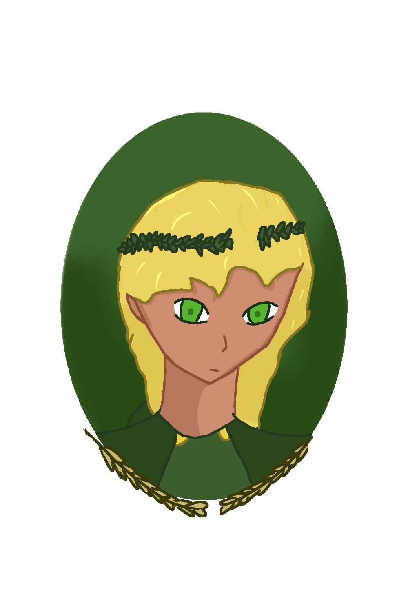

. ݁⋆ ۶ৎ ݁˖ . ݁
Demeter is the Olympian Goddess of agriculture, grain and bread. While she is commonly known as this, she is also the God of health, birth, and marriage. She is the second child of Rhea and Cronus out of 6 other offsprings Demeter is the mother of Persephone and Dionysus In text, she is commonly protrayed with beautiful hair such as in . She is also called Deo.
Demeter has 6 offsprings:
IDk yet.
After the king deforested most of Demeter's sacred grove, the king saw a massive oak tree and wanted to cut it. While his men were really hesistant, the king lunge his axe at the tree, doing so caused blood to spill out of it. Turns out that the king just killed was a dryad beloved by Demeter. The other dryads informed Demeter of this, and she tasked a nymph to message Limos, the Godess of hunger and famine to deliver a curse to the king by inflicting him eternal hunger that can never be satiated. The next morning, the king orders more and more food and sells everything, including his daughter. Eventually, the king eats himself and dies.
In the Homeric hymm to Demeter, it details the story of the abduction of her beloved daughter, Persephone, who was abducted by Hades, who Zeus encouraged to do. During this time, being disguised as an old crying woman, she met with two girls that approached her and asked how she was doing. With this kindness, Demeter rewarded the two girls and their family of taking care of their youngest boy. The boy was originally meant to be turn into a God and be immortal by Demeter, but the mother interrupted her and it did not go as planned...
After Demeter found out the Persephone was in the underworld, Demeter neglected her responsibilites as the Godess of harvest, leaving crops to die via cold weathers, causing famines. Due to humans dying, the other Gods became concerned as there were no humans to worship them. So Zeus sent Hermes to the underworld to try and bring Persephone back. Persephone can come back to her mother, howerver, she must come back to the underworld for every 1/3 of the year. This is due to the pomegrante seeds she ate during her time there. When Demeter is with Persephone, that's when spring starts, but if not, the cold weathers start again. Leading to the creation of the four seasons.